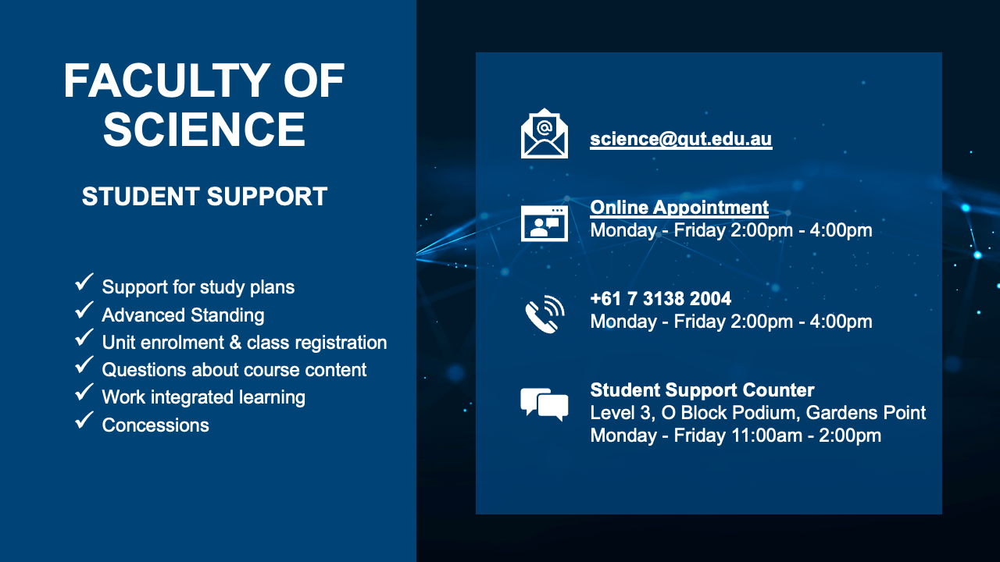

This page serves as your go-to resource for answers to frequently asked questions about the recent structural changes to the ST01 Bachelor of Science program. Whether you're a current student adapting to new offerings or a future scientist exploring QUT, below you will find clarity on majors, unit updates, and overall program enhancements.
Will the changes in the degree structure affect me if I'm currently in my second or third year of the ST01 program?
- No, the changes to the degree structure will generally not affect students currently in their second or third year of the ST01 program. These modifications primarily impact incoming students, ensuring a smooth transition for existing students without disruptions to their current course requirements.
I am a part-time student. How will the changes affect my course load, and will my units change as a result?
- For part-time students, the changes aim to minimize disruptions. Your course load may be adjusted to align with the new structure, but efforts will be made to accommodate part-time schedules. Unit changes might occur, but the university is committed to providing support for a seamless transition, and guidance will be available to assist in navigating any modifications. Refer to the contact details below to get in touch with academic advisors.
Can I choose to stick with the current structure, or am I required to transition to the new program?
- While there may be a transition period, we encourage students to adopt the new program to benefit from the latest enhancements. However, during the transition, flexibility will be provided, allowing you to continue with the current structure for a specified timeframe. It's advisable to consider the advantages of the new program and consult with academic advisors to make an informed decision about the transition.
If there are changes in the course content, will I still be able to meet the requirements for my major?
- Yes, efforts will be made to ensure a smooth transition for students to meet major requirements. We are committed to preserving the integrity of majors, and any adjustments in course content will be designed to align with major requirements. Academic advisors will be available to guide you through the changes and help ensure that you can fulfill the requirements for your chosen major.
Are there any additional resources or support services available to help understand the changes?
- Refer to the contact details below to get in touch with academic advisors.
Can I request to swap a unit from the current structure to a new unit introduced in the program?
- Yes, a process for unit swaps will be facilitated during the transition period. Students will have the opportunity to discuss and request changes, including swapping units from the current structure to new ones introduced in the program. We aim to accommodate such requests to support students in aligning their course choices with the updated program.
I am considering taking a break from my studies. How will this impact my ability to transition to the new structure when I resume my studies?
- Taking a break from studies will not hinder your ability to transition to the new structure upon your return. We are committed to providing support and resources to facilitate a seamless transition for returning students. You'll have access to guidance and information to ensure a smooth integration into the updated program when you decide to resume your studies.
